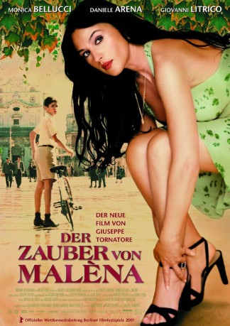

#1148 Der Zauber von Malèna
Auszeichnungen: für 2 Oscars nominiert
 
 IMDB-Wertung: 7.5 / 10
IMDB-Wertung: 7.5 / 10  Metascore: 54
Metascore: 54 
Italienisches Liebesdrama von Giuseppe Tornatore, das im Italien der 1940er Jahre angesiedelt ist. Malèna (Monica Belluci) ist die schönste Frau in dem kleinen sizilianischen Dorf. Als ihr Mann in den Krieg eingezogen wird, wenden sich alle Männer der Dorfes ihr zu, die Frauen stricken aus Eifersucht ein Netz der Intrigen. Roberto ist noch ein Junge aber schon besessen von Malèna ...
Jahr: 2000
Dauer: 109 Minuten
FSK: 12
Land: Italien Studio: Concorde FilmverleihTonspuren:
Untertitel: Englisch,
Auflösung: 1080p (1920x816) Größe: 6584 MB
Genre: Komödie, Drama, Liebe, Krieg
Regisseur:  Giuseppe Tornatore
Giuseppe Tornatore
Drehbuch: Giuseppe Tornatore, Luciano Vincenzoni
Soundtrack: Ennio Morricone
Darsteller:
 Monica Bellucci als Mal��na Scordia
Monica Bellucci als Mal��na Scordia- Giuseppe Sulfaro als Renato Amoroso
- Gabriella Di Luzio als Mantenuta del Barone
- Vitalba Andrea als Moglie farmacista
- Luciano Federico als Renato's Father
- Matilde Piana als Renato's Mother
- Pietro Notarianni als Professor Bonsignore
- Gaetano Aronica als Nino Scordia
- Gilberto Idonea als Avvocato Centorbi
- Angelo Pellegrino als Segretario politico
- Pippo Provvidenti als Dott. Cusimano
- Maria Terranova als Moglie Dott. Cusimano
- Marcello Catalano als Lieutenant Cadei
- Elisa Morucci als Lupetta
- Domenico Gennaro als Farmacista
- Giuseppe Pattavina als Pretore
- Franco Catalano als Negoziante
- Daniele Arena als Agostino
- Giovanni Litrico als Pinè
- Gianluca Guarrera als Nicola
- Michel Daniel Bramanti als Sasà
- Giuseppe Zizzo als Tanino
- Totò Borgese als Milite fascista
- Emanuele Gullotto als Negoziante dischi
- Aurora Quattrocchi als Tenutaria bordello
- Claudia Muzi als 1a Prostituta
- Ornella Giusto als 2a Prostituta
- Conchita Puglisi als 3a Prostituta
- Noemi Giarratana als Sorella Renato
- Paola Pace als 1a Donna linciaggio
- Lucia Sardo als 2a Donna linciaggio
- Angelo Battista als
- Vanni Bramati als
- Claudio Castrogiovanni als
- Alessandro Cremona als
- Lazzaro Croce als
- Patrizia De Libero als
- Maria Teresa Di Clemente als
- Francesco Drago als
- Giovanni Febraro als
- Fabrizio Ferracane als
- Sebastiana Fichera als
- Sebastiano Fisichella als
- Angelo Fortuna als
- Antonio Fulfaro als
- Turi Killer als
- Giuseppe Luciano als
- Chiara Marchese als
- Salvatore Martino als
- Giovanni Martorana als
Datei: X:\2000\Zauber von Malèna, Der (2000, FSK12, 1920x816).mkv seit 29.05.2015
Festplatte: HD 1996-2002
 Es gibt insgesamt 82 Filme in der Gruppe '2000'
Es gibt insgesamt 82 Filme in der Gruppe '2000'